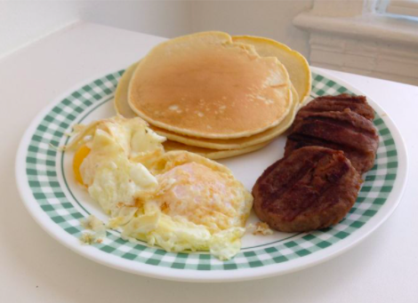

Pancakes Recipe

Description
This recipe is excellent for a Saturday morning breakfast. With just a few common incredients found around the kitchen, you can create fluffy delicious pancakes in as little as 20 minutes!
Ingredients
- 2 Cups of Self-rising Flour
- 2 eggs
- Milk
- 1 Tbsp Canola or Vegitable Oil
- 2 Tbsp sugar
Steps
- Dump flour into a large mixing bowl.
- Add the eggs, oil, and sugar.
- Start slowly pouring milk into the bowl, pouring just enough to make the batter mostly runny but not watery.
- Heat skillet to medium heat on the stovetop and pour a little oil to heat up.
- Once heated, pour a small amount of batter onto the skillet - enough for about 5 inch diameter pancakes.
- Flip after 2-3 minutes, when you see bubbles forming at the top.
- After another 2-3 minutes, remove pancake from skillet. Repeat steps 5-7 until all the batter is gone.
- Enjoy pancakes!